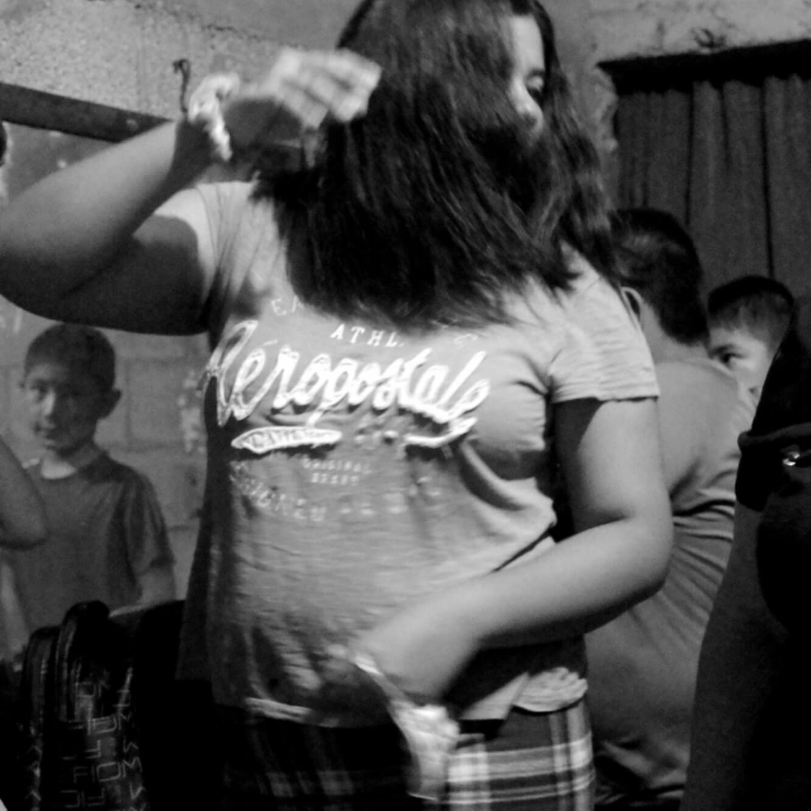

Wallace Heller crafts fiction.
That resonates where it must.
And liberates where it can.
All the rest is up to you.
Born and raised in the Bronx—a transplant to Miami—Wallace has worked in a bindery, as a bar tender, in a flea market, and on a fishing boat in the Keys.
Storytelling goes way back.
PS 185 sat in the middle of city housing, separated by a patch of asphalt surrounded by a chain link fence. Recess was a time of discovery—you got to see who visited your building during the day—who came and went when others weren't around. Sometimes mom would peek out the window and shout. The far side of the fence had a gate so tall it touched the sky. Chained shut, the gate budged a little if you pushed it—kids were always trying to squeeze through. Hector Rodriguez got stuck once—the fire department came to get him out.
"In six years of primary school I never saw that gate open—not even once."
"You just had to use your imagination."